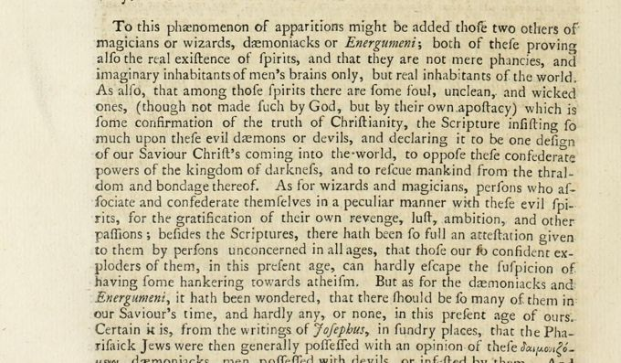
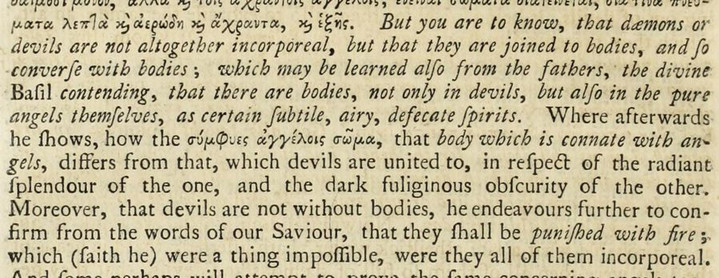

“Some hankering towards atheism” (Book I, ch. V)
English: London 1743, vol. II, p. 702, scan. Long s modernised. Highlighted: Lecky’s quotation.

To this phænomenon of apparitions might be added those two others of magicians or wizards, dæmoniacks or Energumeni; both of these proving also the real existence of spirits, and that they are not mere phancies, and imaginary inhabitants of men’s brains only, but real inhabitants of the world. As also, that among those spirits there are some foul, unclean, and wicked ones, (though not made such by God, but by their own apostacy) which is some confirmation of the truth of Christianity, the Scripture insisting so much upon these evil dæmons or devils, and declaring it to be one design of our Saviour Christ’s coming into the world, to oppose these confederate powers of the kingdom of darkness, and to rescue mankind from the thraldom and bondage thereof. As for wizards and magicians, persons who associate and confederate themselves in a peculiar manner with these evil spirits, for the gratification of their own revenge, lust, ambition, and other passions; besides the Scriptures, there hath been so full an attestation given to them by persons unconcerned in all ages, that those our so confident exploders of them, in this present age, can hardly escape the suspicion of having some hankering towards atheism. But as for the dæmoniacks and Energumeni, it hath been wondered, that there should be so many of them in our Saviour’s time, and hardly any, or none, in this present age of ours.
Psellus and St Basil: devils have bodies, or they could not burn (vol. II, p. 702)
English: London 1743, vol. II, p. 702, in the notes, scan n75. Cudworth quotes Psellus’s dialogue On the operation of demons in Greek and translates it; the Greek is not transcribed here. Long s normalised; Cudworth’s italics kept. Highlighted: what Lecky uses.

[Thus Psellus in his Dialogue …] But you are to know, that dæmons or devils are not altogether incorporeal, but that they are joined to bodies, and so converse with bodies; which may be learned also from the fathers, the divine Basil contending, that there are bodies, not only in devils, but also in the pure angels themselves, as certain subtile, airy, defecate spirits. Where afterwards he shows, how the σύμφυες ἀγγέλοις σῶμα, that body which is connate with angels, differs from that, which devils are united to, in respect of the radiant splendour of the one, and the dark fuliginous obscurity of the other. Moreover, that devils are not without bodies, he endeavours further to confirm from the words of our Saviour, that they shall be punished with fire; which (saith he) were a thing impossible, were they all of them incorporeal.
Lecky (ch. I, text and note 48): Psellus “lays it down as a fundamental position that all demons have bodies. This, he says, is the necessary inference from the orthodox doctrine that they endure the torment of fire”; and in the note, “This was a very old notion. St. Basil seems to have maintained it very strongly. Cudworth’s Int. System, vol. ii. p. 648.” Both points are on this page of the 1743 edition; Lecky’s page number belongs to another edition, as with his note 127.
Further down the rabbit hole
Sources that Lecky cites in the notes next to the ones that cite this page.
- Garinet, Histoire de la Magie en FranceA history of magic in France, from the Frankish kings to the author’s own day
- Glanvill, Saducismus TriumphatusDenying witches is the first step to atheism
- Matter, Histoire critique du gnosticismeKilled for looking pale: Cathars, fasting and the eleventh-century ‘Manichaeans’
- Maury, La magie et l’astrologieRoman laws against diviners, the first medieval doubters, and the praying heretics
- Hutchinson, An Historical Essay concerning WitchcraftCounting the English witch-trials, and the last three hanged
- Michelet, La SorcièreHow many witches were burnt, and when the last: Michelet gives two answers, and Lecky takes one from each


Backlinks
Every place in Rationalism in Europe that links to this page (generated automatically when the site is built).